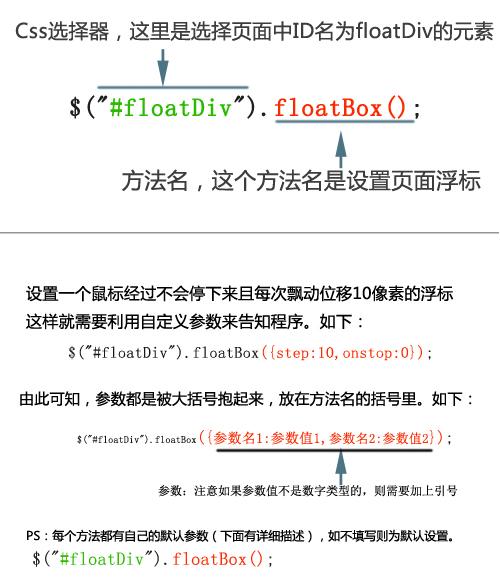

| fiveone jQuery综合插件 | ||||||||||||||||||||||||||||||||||||||||||||||||||||||||||||||||||||||||||||||||||||
| 点此下载：jquery.fiveone.min.js | ||||||||||||||||||||||||||||||||||||||||||||||||||||||||||||||||||||||||||||||||||||
| 介绍： 作者：zhuCheer 此插件综合了常用的各类页面效果，目前此版本支持图片滚动、页面浮标、文字展开收起效果，效果还在不断更新，敬请关注。 |
||||||||||||||||||||||||||||||||||||||||||||||||||||||||||||||||||||||||||||||||||||
| 使用前准备： 页面必需调用jQuery和fiveone插件文件，才能正常使用fiveone插件。 开始： <script type="text/javascript" src="http://ajax.aspnetcdn.com/ajax/jQuery/jquery-1.7.2.min.js"></script> <script type="text/javascript" src="jquery.fiveone.min.js"></script>//这里请注意文件路径 <script type="text/javascript"> $(function(){ //这里添加你自己的代码 }); </script> |
||||||||||||||||||||||||||||||||||||||||||||||||||||||||||||||||||||||||||||||||||||
| 示例： 设置一个浮动层在页面上：Demo <script type="text/javascript"> $(function(){ $("#floatDiv").floatBox(); }); </script> 使用方法及参数设置：  |
||||||||||||||||||||||||||||||||||||||||||||||||||||||||||||||||||||||||||||||||||||
各种效果方法介绍：
<script type="text/javascript"> $(function(){ $("#floatDiv").floatBox(); }); </script>
<script type="text/javascript"> $(function(){ $("#rollDiv1").rollAction(); }); </script>
<script type="text/javascript"> $(function(){ $("#a").focusImg1(); }); </script>
<script type="text/javascript"> $(function(){ $("img").hoverBtn(); }); </script>
<script type="text/javascript"> $(function(){ $("#a").focusImg2(); }); </script>
|
||||||||||||||||||||||||||||||||||||||||||||||||||||||||||||||||||||||||||||||||||||